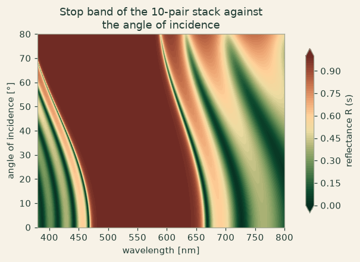

Docs › Examples › Distributed Bragg reflector
Wave optics · 1D
Distributed Bragg reflector
A quarter-wave stack of titanium dioxide and silica films on glass that reflects almost all light in a band around 550 nm.

What it computes
OneSimulation solves the plane-wave Maxwell problem in the layered medium with its coherent optical stack, which cascades the scattering of every film for s and p polarisation and returns reflected, transmitted and absorbed power over wavelength and angle of incidence. Stacks of 3 to 40 pairs are compared at normal incidence, and the stop band of 10 pairs is mapped from 0 to 80 degrees.
What it checks
The peak reflectance at 550 nm equals the quarter-wave admittance formula to machine precision for all five stacks (0.8595 for 3 pairs up to 0.9999984 for 15 pairs), R + T = 1 holds to 1e-12, and the half-maximum stop band approaches the closed-form width of 168.9 nm as pairs are added (+14.3 % for 10, +7.5 % for 15, +1.4 % for 40 pairs).
The notebook
The complete notebook, cell by cell. Run it to produce the figures and the comparison printout.
A distributed Bragg reflector (DBR) is a stack of \(N\) pairs of alternating high- and low-index dielectric films, each a quarter of a wavelength thick at the design wavelength \(\lambda_0\):
The partial reflections from all interfaces leave the stack in phase at \(\lambda_0\) and add up to nearly total reflection over a band of wavelengths, the stop band, without the absorption loss of a metal mirror. Light comes from air, the stack sits on a glass substrate:
| medium | refractive index | thickness | |---|---|---| | air (incidence) | \(n_0=1.00\) | semi-infinite | | TiO\(_2\) (H) | \(n_H=2.35\) | \(\lambda_0/(4n_H)=58.5\) nm | | SiO\(_2\) (L) | \(n_L=1.46\) | \(\lambda_0/(4n_L)=94.2\) nm | | glass substrate | \(n_s=1.52\) | semi-infinite |
CoherentOpticalStack solves Maxwell's equations in the layered medium exactly for plane waves: every film is a scattering element for the forward and backward wave, and the elements are cascaded from the incidence side to the substrate. It returns the reflected, transmitted and absorbed power fractions for any wavelength, angle and polarisation.
Reference (H. A. Macleod, Thin-Film Optical Filters, 5th ed., CRC Press 2018, ch. 6; M. Born and E. Wolf, Principles of Optics, 7th ed., §1.6). At \(\lambda_0\) every quarter-wave film turns the admittance \(Y\) behind it into \(n^2/Y\), so \(N\) pairs \((HL)^N\) on the substrate present \(Y=(n_H/n_L)^{2N}n_s\) and
The stop band of the infinite stack spans, in the wavenumber \(g=\lambda_0/\lambda\),
import numpy as np
from onesim.materials.electromagnetic import CoherentOpticalStack, OpticalLayer
from onesim.visualization import theme, plots
theme.set()Model
One stack per number of pairs; the layer list is the pair \((H, L)\) repeated \(N\) times.
design, n_air, n_high, n_low, n_glass = 550e-9, 1.0, 2.35, 1.46, 1.52
pair = (OpticalLayer(thickness=design / (4 * n_high), index=n_high), OpticalLayer(thickness=design / (4 * n_low), index=n_low))
stacks = {pairs: CoherentOpticalStack(layers=pair * pairs) for pairs in (3, 6, 10, 15, 40)}
wavelength = np.linspace(380e-9, 800e-9, 4201)
spectra = {pairs: stack(wavelength, 1.0, n_air, n_glass, polarization="s") for pairs, stack in stacks.items()}Comparison with the closed forms
The peak reflectance at \(\lambda_0\) for every stack, and the stop band, read where the reflectance falls to one half. A finite stack has soft band edges, so its half-maximum band is slightly wider than that of the infinite stack and approaches it as pairs are added.
peak = lambda pairs: ((n_air - (n_high / n_low) ** (2 * pairs) * n_glass) / (n_air + (n_high / n_low) ** (2 * pairs) * n_glass)) ** 2
print("pairs R(550 nm) computed closed form deviation")
for pairs, stack in stacks.items():
computed = stack(design, 1.0, n_air, n_glass, polarization="s").reflected
print(f"{pairs:5d} {computed:20.8f} {peak(pairs):13.8f} {computed - peak(pairs):+11.1e}")
width = 4 / np.pi * np.arcsin((n_high - n_low) / (n_high + n_low))
edges = design / (1 + width / 2), design / (1 - width / 2)
centre = np.searchsorted(wavelength, design)
bands = {pairs: (wavelength[:centre][s.reflected[:centre] < 0.5][-1], wavelength[centre:][s.reflected[centre:] < 0.5][0])
for pairs, s in spectra.items() if pairs >= 10}
print(f"closed-form stop band of the infinite stack: {1e9 * edges[0]:.1f} to {1e9 * edges[1]:.1f} nm, width {1e9 * (edges[1] - edges[0]):.1f} nm")
for pairs, (low, high) in bands.items():
print(f"{pairs:3d} pairs: half-maximum band {1e9 * low:.1f} to {1e9 * high:.1f} nm, width {1e9 * (high - low):.1f} nm "
f"({100 * ((high - low) / (edges[1] - edges[0]) - 1):+.1f} %)")
print(f"largest R + T - 1 over the spectrum: {max(np.abs(s.reflected + s.transmitted - 1).max() for s in spectra.values()):.1e}")Oblique incidence
Tilting the beam shortens the optical path difference, so the stop band moves to shorter wavelengths. The map shows s polarisation; tilted["p"] holds p polarisation, whose stop band narrows and closes as the Brewster condition of the inner interfaces is approached.
cosines = np.cos(np.radians(np.linspace(0, 80, 81)))
tilted = {polarization: stacks[10](wavelength[:, None], cosines[None, :], n_air, n_glass, polarization=polarization).reflected
for polarization in ("s", "p")}Figure
fig = plots.figure(1, 2, size=(14, 5))
plots.line(1e9 * wavelength, {f"{pairs} pairs": spectra[pairs].reflected for pairs in (3, 6, 10, 15)},
points={"closed form R(550 nm)": ([550] * 4, [peak(pairs) for pairs in (3, 6, 10, 15)])},
vlines={"closed-form lower edge": 1e9 * edges[0], "closed-form upper edge": 1e9 * edges[1]}, ylimits=(0, 1.05),
xlabel="wavelength [nm]", ylabel="reflectance R", title="Normal incidence", legend="center", ax=fig[0])
plots.heatmap(1e9 * wavelength, np.degrees(np.arccos(cosines)), tilted["s"], limits=(0, 1), label="reflectance R (s polarisation)",
xlabel="wavelength [nm]", ylabel="angle of incidence [°]", aspect="auto", title="10 pairs at oblique incidence", ax=fig[1])
plots.show()Going further
Swap TiO\(_2\) for a lower index such as Ta\(_2\)O\(_5\) (\(n\approx2.1\)) and the stop band narrows as the arcsine predicts. Give the films a complex index, index=2.35 + 0.002j, to see the absorbed fraction appear, or pass a function of the wavelength as index for dispersive films.